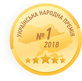

[ На консультации ты получишь ответы на все ключевые вопросы про IT]
Что из себя представляет IT-сфера в Украине на самом деле?
Почему IT-сфера растет даже в кризис, а IT компании обеспечивают идеальные условия работы для специалистов?
Какие направления есть в IT рынке и что нужно для старта в каждом из них?
За что специалисты с 3-х летним опытом в IT получают зарплаты по $2000-3500?
Что нужно сделать, чтобы уже через 3-5 месяцев начать карьеру в IT и получить первую работу с ЗП от $700 до $1200 ?
[ Также вы получите личную консультацию по старту карьеры_ ]
Определите какое направление будет легче, интересней и быстрее освоить именно вам.
Вместе с консультантом сформируете пошаговый план входа в IT с учетом ваших текущих знаний и навыков.
Получите доступ к 3-м развернутым видео по ключевым направлениям в IT, чтобы самостоятельно изучить все детали.
[ Почему сфера IT так интересна ]
Сегодня подготовили для вас обзор рынка из отчета ассоциации IT Ukraine
12634
IT-компании зарегистрированы в Украине
2500$
Средний доход IT-специалиста
127тыс.
Человек работает Украинской IT-сфере сейчас
2000
Новых IT-компаний появилось за 2 года
83%
Всех затрат IT компаний - это затраты на оплату труда разработчиков
200тыс.
T-специалистов по прогнозам будет в стране через 4-5 лет
Доход IT-шников превышает среднюю зарплату по другим отраслям
в 7 раз
при официальном трудоустройстве IT-специалиста
в 7,8 раз
при работе через ФОП
[ При этом IT компании предлагают... ]
Стабильно высокие зарплаты в долларах.
Стабильный карьерный рост согласно вашим реальным знаниям и навыкам.
Комплексный соц. пакет.
Отличные условия труда в современных офисах.
Гибкий рабочий график и возможность работы даже из дома.
Устал растрачивать свой потенциал, работая за копейки в стагнирующей отрасли или на ненависной тебе работе?
Сейчас на IT рынке работы намного больше, чем квалифицированных кадров, способных ее выполнять. Работы, за которую платят много и без задержек. Потому что конкуренция за толковых специалистов между компаниями крайне высока. И эта тенденция будет только усиливаться.
[ Узнай, как именно начнется твой путь в IT_ ]
[ Кто мы такие и почему всё это рассказываем_ ]
[ Go for IT ]
GoIT выиграла тендер ПР ООН Украина
На реализацию социального проекта по бесплатному обучению Frontend. Мы стали самой молодой компанией-партнером ПР ООН. В рамках проекта Go for IT мы обязались обучить Frontend-разработке 300 переселенцев.
[ Партнеры ]


[ Награды ]
Best IT Eduсation 2015
Награждена компания GoIT за вклад в подготовку сильных Junior-специалистов
Ukranian IT Awards 2016
Награжден сооснователь GoIT Андрей Пивоваров за выдающийся вклад в IT-обучение украинских Junior-разработчиков.
Украинская Народная Премия 2018
Победа в номинации IT-образование 2018 Всеукраинский национальный проект определил GoIT лидером в отрасли IT образования.
